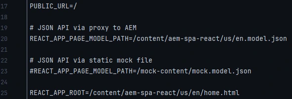

Blogs > Getting started with SPA
AEM SPA
Getting started with AEM SPA
| February 21, 2024Welcome to the blog designed for developers new to the AEM SPA concept. This blog will walk you through some of the well known questions like What is SPA? Why SPA? and mainly Why SPA with AEM? We'll cover these questions in this blog.
Firstly we'll look into the approches that we have with us to build a web application.
Approaches
-
Traditional Approach ( Client - Server )

In traditional approach, the client makes a request of a page to the server and the server will return the HTML i.e., the content, and when the client needs another page, he makes another request to the server and the server will return the different responses for the specified content.
-
Single Page Application (SPA)

In SPA, the client makes the initial request and the server responds with the content and as much as possible content with the initial request. When a client has some content and it's moving from page to page, so when we move from page to page we don't make any request to the server and all the content is present at the client side only.
If a client makes some request which is not present at the client side, in that case the client will make the request to the server for the specific content and the server will return the content in the form of Json.
With SPA, the initial request is a bit slow as the server tries to dump the content as much as possible as per the SPA configurations, but the subsequent request is faster as the client serves the content from the client side only and not the server side.
What is SPA?
SPA stands for Single Page Application. It is a web application or website that interacts with the user by dynamically rewriting the current page rather than loading entire new pages from the server. In a traditional multi-page application, when you navigate from one page to another, the browser requests a new page from the server, and the entire page is reloaded.
In contrast, a Single Page Application loads a single HTML page and dynamically updates it's content as the user interacts with the application. This is often achieved using JavaScript frameworks or libraries such as Angular, React, or Vue.js. SPAs provide a smoother and more seamless user experience because they can update specific parts of the page without requiring a full page reload.
Why SPA?
Single Page Applications (SPAs) are favored for several reasons, and their adoption is driven by the desire to enhance user experiences and streamline web development. Here are some key reasons why SPAs are often preferred:
Seamless User Experience: SPAs provide a smoother and more seamless user experience by dynamically updating content without the need for full page reloads. This leads to faster response times and a more fluid interaction, creating a more engaging and enjoyable user interface.
Reduced Loading Time: Traditional multi-page applications often involve reloading the entire page, resulting in longer loading times. SPAs, on the other hand, load initial resources upfront and fetch additional data asynchronously, reducing latency and making the application feel more responsive.
Asynchronous Data Loading: SPAs leverage asynchronous data loading, often using AJAX or similar techniques. This allows for fetching data in the background, updating the content without requiring a complete page refresh. It contributes to a dynamic and interactive user experience.
Efficient Resource Utilization: SPAs can be more resource-efficient as they load resources, such as scripts and stylesheets, only once during the initial page load. Subsequent interactions with the application involve fetching only the necessary data, minimizing redundant requests to the server.
Client-Side Routing: SPAs handle navigation on the client side, updating the URL and rendering content dynamically. This reduces the need for server requests during navigation, contributing to a more responsive and fluid application.
Mobile Responsiveness: SPAs are well-suited for mobile devices due to their ability to load content dynamically and provide a responsive user interface. This is crucial in the current era where a significant portion of web traffic comes from mobile devices.
Support for Offline Mode: Some SPAs can incorporate service workers and caching strategies, enabling them to function partially or entirely offline. This is particularly beneficial for users with intermittent internet connectivity.
Why SPA with AEM?

Both SPA & AEM have different architectures and the advantage of SPA is high performance, AEM has a client server architecture and we must say that one of the biggest advantages of AEM is authoring. So, if we integrate these things together i.e the capability of SPA and the capability of AEM, would result in a very powerful AEM SPA application.
How can we implement SPA in AEM?
There are basically four technologies/frameworks to develop SPA :
React JS
Angular JS
Vue JS
Handlebar & Ember
We would be working with React js to develop an AEM SPA application.
Creating an AEM SPA Project
Note : Ensure that a fresh instance of AEM, started in Author mode, is running locally.
Create the project :
-
Open the command line terminal and enter the following maven command.
mvn -B org.apache.maven.plugins:maven-archetype-plugin:3.2.1:generate -D archetypeGroupId=com.adobe.aem -D archetypeArtifactId=aem-project-archetype -D archetypeVersion=35 -D appTitle="SPA React" -D appId="spa-react" -D artifactId="aem-spa.react" -D groupId="com.adobe.aem.spa.react" -D frontendModule="react" -D aemVersion=6.5.0[ Replace the AEM version accordingly ]
-
The following folder and file structure is generated by the maven archetype on our local file system & each folder represents an individual Maven module.

We will primarily be working with the ui.frontend module, which is the React app.
-
Deploy and build the project using the following command :
mvn clean install -PautoInstallSinglePackage
The build will take around a minute and should end with the BUILD SUCCESS message.
Ui.Frontend Module
Ui.frontend module has the following folder structure

There are few important files that we should know in this structure i.e., .env.development, package.json & clientlib.config.js
❖ .env.development
This file contains the path of the JSON API which is consumed by the react app to display the content on the frontend module and also the root path of the frontend module.
We can provide the content to the frontend in two ways :
-
via AEM
We need to provide the proxy path to the AEM which is added in the package.json file.

-
via static mock file
The static mock json file is added under the public folder.

❖ package.json
This file consists of all the dependencies and the scripts required for the frontend module.
❖ clientlib.config.js
This file has the configuration for the clientlib generator, i.e., the clientlibs are generated in this file.
❖ src folder
All the React components, images and styles are kept in this folder

How to create an SPA component?

In normal cases, AEM components render at server side, but SPA components should be rendered at client side as per the concept. So we'll be creating a React component and then we'll map the AEM component to the React component.
The AEM component will not be having any rendering script, it will only have the dialog and the SPA component will have the rendering logic and this SPA component will get content from the AEM repository in the form of Json, and this complete client side application will be deployed in AEM in the form of client libraries.
Our SPA component should have the capability of authoring as well, as per the AEM basic principles. So, for authoring, the SPA development framework provides an SPA editor.
SPA Editor : It adds the capability of authoring to the SPA component.
Now, coming to the creation of the SPA component, so basically SPA component has two parts i.e, AEM component and React component and when we combine these two it makes a complete SPA component

These two sections have different responsibilities :
AEM component is used to create dialog and sling model (used for content exporter) and the React component is used for rendering and the content for rendering is provided by the sling model in the form of json.
But these two sections must be mapped as AEM component is at server side and React component is at client side. So, now the SPA framework comes into picture i.e., the React framework as it provides the functionality to map the AEM component to the React component.
So, once we have a React component and an AEM component, we map both the components using MapTo() functionality which has two sections, the first section has the resource type of the AEM component & the other section is for the React component

Hope you all understood the basic concept of AEM SPA. In the next blog, we'll look into how to create AEM components and React components and implement the mapping and rendering of the SPA components on the page.
Thanks for reading! :)
Leave a Comment